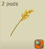

Menu barbok'you


| Paysan lvl 1 | Blé | ||
|---|---|---|---|
| Quantités récoltées : | XP gagnées : | ||
| lvl 1 :1 à 2 lvl 10 :1 à 4 lvl 20 : 1 à 6 lvl 30 : 1 à 8 lvl 40 : 1 à 10 lvl 50 : 1 à 12 lvl 60 : 1 à 14 lvl 70 : 1 à 16 lvl 80 : 1 à 18 lvl 90 : 1 à 20 lvl 100 : 6 à 27 |
lvl 5 : 1 à 3 lvl 15 : 1 à 5 lvl 25 : 1 à 7 lvl 35 : 1 à 9 lvl 45 : 1 à 11 lvl 55 : 1 à 13 lvl 65 : 1 à 15 lvl 75 : 1 à 17 lvl 85 : 1 à 19 lvl 95 : 1 à 21 |
10 xp | |
| Paysan lvl 10 | Orge | ||
|---|---|---|---|
| Quantités récoltées : | XP gagnées : | ||
| lvl 10 : 1 à 2 lvl 20 : 1 à 4 lvl 30 : 1 à 6 lvl 40 : 1 à 8 lvl 50 : 1 à 10 lvl 60 : 1 à 12 lvl 70 : 1 à 14 lvl 80 : 1 à 16 lvl 90 : 1 à 18 lvl 100 : 6 à 25 |
lvl 15 : 1 à 3 lvl 25 : 1 à 5 lvl 35 : 1 à 7 lvl 45 : 1 à 9 lvl 55 : 1 à 11 lvl 65 : 1 à 13 lvl 75 : 1 à 15 lvl 85 : 1 à 17 lvl 95 : 1 à 19 |
15 xp | |
| Paysan lvl 20 | Avoine | ||
|---|---|---|---|
|  | Quantités récoltées : | XP gagnées : | |
| lvl 20 : 1 à 2 lvl 30 : 1 à 4 lvl 40 : 1 à 6 lvl 50 : 1 à 8 lvl 60 : 1 à 10 lvl 70 : 1 à 12 lvl 80 : 1 à 14 lvl 90 : 1 à 16 lvl 100 : 6 à 23 |
lvl 25 : 1 à 3 lvl 35 : 1 à 5 lvl 45 : 1 à 7 lvl 55 : 1 à 9 lvl 65 : 1 à 11 lvl 75 : 1 à 13 lvl 85 : 1 à 15 lvl 95 : 1 à 17 |
20 xp | |
| Paysan lvl 30 | Houblon | ||
|---|---|---|---|
| Quantités récoltées : | XP gagnées : | ||
| lvl 30 : 1 à 2 lvl 40 : 1 à 4 lvl 50 : 1 à 6 lvl 60 : 1 à 8 lvl 70 : 1 à 10 lvl 80 : 1 à 12 lvl 90 : 1 à 14 lvl 100 : 6 à 21 |
lvl 35 : 1 à 3 lvl 45 : 1 à 5 lvl 55 : 1 à 7 lvl 65 : 1 à 9 lvl 75 : 1 à 11 lvl 85 : 1 à 13 lvl 95 : 1 à 15 |
25 xp | |
| Paysan lvl 40 | Lin | ||
|---|---|---|---|
| Quantités récoltées : | XP gagnées : | ||
| lvl 40 : 1 à 2 lvl 50 : 1 à 4 lvl 60 : 1 à 6 lvl 70 : 1 à 8 lvl 80 : 1 à 10 lvl 90 : 1 à 12 lvl 100 : 6 à 19 |
lvl 45 : 1 à 3 lvl 55 : 1 à 5 lvl 65 : 1 à 7 lvl 75 : 1 à 9 lvl 85 : 1 à 11 lvl 95 : 1 à 13 |
30 xp | |
| Paysan lvl 50 | Seigle | ||
|---|---|---|---|
| Quantités récoltées : | XP gagnées : | ||
| lvl 50 : 1 à 2 lvl 60 : 1 à 4 lvl 70 : 1 à 6 lvl 80 : 1 à 8 lvl 90 : 1 à 10 lvl 100 : 6 à 17 |
lvl 55 : 1 à 3 lvl 65 : 1 à 5 lvl 75 : 1 à 7 lvl 85 : 1 à 9 lvl 95 : 1 à 11 |
35 xp | |
| Paysan lvl 50 | Riz | ||
|---|---|---|---|
| Quantités récoltées : | XP gagnées : | ||
| lvl 50 : 1 à 2 lvl 60 : 1 à 4 lvl 70 : 1 à 6 lvl 80 : 1 à 8 lvl 90 : 1 à 10 lvl 100 : 6 à 17 |
lvl 55 : 1 à 3 lvl 65 : 1 à 5 lvl 75 : 1 à 7 lvl 85 : 1 à 9 lvl 95 : 1 à 11 |
35 xp | |
| Paysan lvl 60 | Malt | ||
|---|---|---|---|
| Quantités récoltées : | XP gagnées : | ||
| lvl 60 : 1 à 2 lvl 70 : 1 à 4 lvl 80 : 1 à 6 lvl 90 : 1 à 8 lvl 100 : 6 à 15 |
lvl 65 : 1 à 3 lvl 75 : 1 à 5 lvl 85 : 1 à 7 lvl 95 : 1 à 9 |
40 xp | |
| Paysan lvl 70 | Chanvre | ||
|---|---|---|---|
 |
Quantités récoltées : | XP gagnées : | |
| lvl 70 : 1 à 2 lvl 80 : 1 à 4 lvl 90 : 1 à 6 lvl 100 : 6 à 13 |
lvl 75 : 1 à 3 lvl 85 : 1 à 5 lvl 95 : 1 à 7 |
45 xp | |
| Paysan lvl 1 | Blé d'Or | |
|---|---|---|
| Quantités récoltées : | XP gagnées : | |
| 1 | 10 xp | |
| Paysan lvl 10 | Orge en Sucre | |
|---|---|---|
| Quantités récoltées : | XP gagnées : | |
| 1 | 15 xp | |
| Paysan lvl 20 | Avoine Aurifére | |
|---|---|---|
| Quantités récoltées : | XP gagnées : | |
| 1 | 20 xp | |
| Paysan lvl 30 | Houblon Brillant | |
|---|---|---|
| Quantités récoltées : | XP gagnées : | |
| 1 | 25 xp | |
| Paysan lvl 40 | Lin Tempete | |
|---|---|---|
| Quantités récoltées : | XP gagnées : | |
| 1 | 30 xp | |
| Paysan lvl 50 | Seigle Résistant | |
|---|---|---|
| Quantités récoltées : | XP gagnées : | |
| 1 | 35 xp | |
| Paysan lvl 70 | Chanvre Euphorique | |
|---|---|---|
| Quantités récoltées : | XP gagnées : | |
| 1 | 45 xp | |
 Parrallèlement au fauchage vous pouvez également moudre les épis pour obtenir des farines :
Parrallèlement au fauchage vous pouvez également moudre les épis pour obtenir des farines :| Paysan lvl 1 | Farine de Blé | |
|---|---|---|
| Recettes : | XP gagnées : | |
| 2 Epis de blé | 1 xp | |
| Paysan lvl 1 | Farine d'Orge | |
|---|---|---|
| Recettes : | XP gagnées : | |
| 2 Epis d'orge | 1 xp | |
| Paysan lvl 1 | Farine d'Avoine | |
|---|---|---|
| Recettes : | XP gagnées : | |
| 2 Epis d'avoine | 1 xp | |
| Paysan lvl 1 | Farine de Houblon | |
|---|---|---|
| Recettes : | XP gagnées : | |
| 2 Epis de houblon | 1 xp | |
| Paysan lvl 1 | Farine de Lin | |
|---|---|---|
| Pas encore de screen dispo | Recettes : | XP gagnées : |
| 2 Epis de lin | 1 xp | |
| Paysan lvl 1 | Farine de Riz | |
|---|---|---|
| Pas encore de screen dispo | Recettes : | XP gagnées : |
| 2 Riz | 1 xp | |
| Paysan lvl 1 | Farine de Seigle | |
|---|---|---|
| Pas encore de screen dispo | Recettes : | XP gagnées : |
| 2 Epis de seigle | 1 xp | |
| Paysan lvl 1 | Farine de Malt | |
|---|---|---|
| Pas encore de screen dispo | Recettes : | XP gagnées : |
| 2 Epis de malt | 1 xp | |
| Paysan lvl 1 | Farine de Chanvre | |
|---|---|---|
| Pas encore de screen dispo | Recettes : | XP gagnées : |
| 2 Epis de chanvre | 1 xp | |
| Paysan lvl 1 | Farine Blanche | |
|---|---|---|
| Pas encore de screen dispo | Recettes : | XP gagnées : |
| 2 Epis de blé 2 Epis de seigle |
10 xp | |
| Paysan lvl 10 | Farine de Bise | |
|---|---|---|
| Pas encore de screen dispo | Recettes : | XP gagnées : |
| 2 Epis de blé 2 Epis d'orge 2 Epis de seigle |
25 xp | |
| Paysan lvl 20 | Farine Paysanne | |
|---|---|---|
| Recettes : | XP gagnées : | |
| 2 Epis de blé 2 Epis d'orge 2 Epis de seigle 2 Epis d'avoine |
50 xp | |
| Paysan lvl 40 | Farine Compléte | |
|---|---|---|
 |
Recettes : | XP gagnées : |
| 2 Epis de blé 2 Epis d'orge 2 Epis de seigle 2 Epis d'avoine 2 Epis d'houblon |
100 xp | |
| Paysan lvl 100 | Farine de Xavier le Boulanger | |
|---|---|---|
|
Recettes : | XP gagnées : |
| 2 Epis de blé 2 Epis d'orge 2 Epis de seigle 2 Epis d'avoine 2 Epis d'houblon |
100 xp | |
| Paysan lvl 1 | Graine de Lin | |
|---|---|---|
| Pas encore de screen dispo | Recettes : | XP gagnées : |
| 5 Fleurs de lin | 1 xp | |
| Paysan lvl 1 | Graine de Chanvre | |
|---|---|---|
| Pas encore de screen dispo | Recettes : | XP gagnées : |
| 5 Fleurs de chanvre | 1 xp | |
| Paysan lvl 1 | Huile de Palme | |
|---|---|---|
| Recettes : | XP gagnées : | |
| 6 Fruits de palme | 1 xp | |
| Paysan lvl 1 | Huile de Sésame | |
|---|---|---|
| Pas encore de screen dispo | Recettes : | XP gagnées : |
| 10 Graines de sésame | 1 xp | |
| Paysan lvl 1 | Huile de Tournesol Sauvage | |
|---|---|---|
| Pas encore de screen dispo | Recettes : | XP gagnées : |
| 10 Graines de tournesol sauvage | 1 xp | |
| Paysan lvl 1 | Huile de Noix | |
|---|---|---|
| Recettes : | XP gagnées : | |
| 5 Noix de cajou 5 Noix de pécan |
10 xp | |
| Paysan lvl 10 | Huile de Koode | |
|---|---|---|
| Pas encore de screen dispo | Recettes : | XP gagnées : |
| 5 Noix de cajou 5 Noix de pécan 5 Graines de tournesol sauvage |
25 xp | |
Dofus est un MMORPG édité par Ankama." Barbok " est un site non-officiel sans aucun lien avec Ankama.
Toutes les illustrations sont la propriété d'Ankama Studio et de Dofus. Le contenu de ce site a été rédigé initialement par Immortal, il ne s'agit que d'une remise en ligne effectuée par Eternal Games.